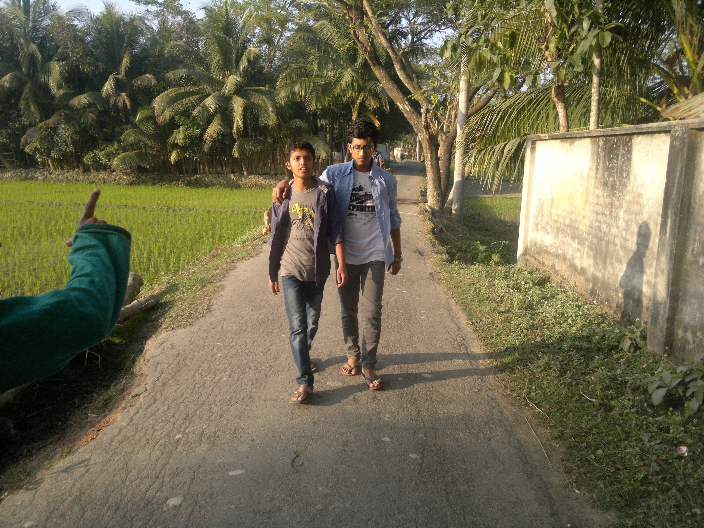

its not complex.its pathetic but enjoyable
A video blog or video log, sometimes shortened to vlog, is a form of blog for which the medium is video. Vlog entries often combine embedded video with supporting text, images, and other metadata. Entries can be recorded in one take or cut into multiple parts.
